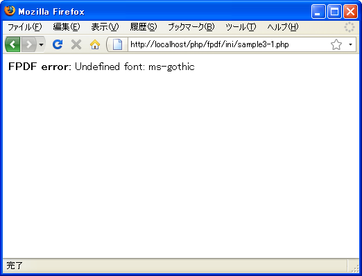

- Home ›
- FPDFを使ったPDF作成 ›
- 基本操作
フォントの登録(AddMBFont)
MBFPDFクラスのオブジェクトを作成したら、次に使用するフォントを登録します。標準で用意されているフォント以外のフォントを使用する場合に登録が必要となります。
標準で用意されているフォントは次の通りです。
Courier 等幅(fixed-width) Helvetica (sans serif) Arial (sans serif) Times (serif) Symbol (symbolic) ZapfDingbats (symbolic)
日本語用のフォントを使用する場合はMBFPDFクラスで用意されているAddMBFontメソッドで登録が必要です。
まず元になっているFPDFクラスで用意されているAddFontメソッドについて確認します。
AddFont(string family [, string style [, string file]])
TrueTypeフォントまたはType1フォントを取り込み、利用できるようにします。
使いたいフォントが標準にないものの場合、 先にフォントの定義ファイルを
makefont.phpスクリプトにて生成する必要があります。
定義ファイル（と、埋め込みフォントの場合フォントファイルそのもの）はカ
レントディレクトリか、 FPDF_FONTPATH定数を定義している場合、その指定ディ
レクトリに存在する必要があります。 存在しない場合、"Could not include
font definition file"というエラーが表示されます。
パラメータ:
family 任意のフォントファミリー(Font family)を指定します。標準のフォ
ントファミリー(Font family)であれば、一致するフォントがセットされます
style フォントのスタイルを指定します
file フォント定義ファイル名
1番目の引数にはフォントファミリーを指定します。
2番目の引数にはフォントのスタイルを指定します。指定可能な値は次の通りです。
指定なし(空白): 標準(regular) B: ボールド(bold) I: イタリック(italic) BI または IB: ボールドイタリック(bold italic)
デフォルトの値は「標準(regular)」です。
3番目の引数にはフォントの定義ファイル名を指定します。
実際には次のように記述します。
<?php
require('fpdf/mbfpdf.php');
$pdf = new MBFPDF();
$pdf->AddFont('Comic','I','comici.php');
?>
AddFontメソッドは標準で用意されているマルチバイトフォント以外のフォントを使用できるようにする場合に使います。
日本語フォントの登録
続いて日本語用のフォントの登録方法です。日本語用のフォントの場合はMBFPDFクラスで用意されているAddMBFontメソッドを使用します。次のように使用します。
AddMBFont(string family, string enc)
パラメータ: family フォントファミリー(Font family)を指定します enc 文字コード
1番目の引数にはマルチバイトフォントファミリー名を指定します。指定可能な値は定義済みの定数で次のいずれかです。
KOZMIN (KozMinPro-Regular-Acro) GOTHIC (MS-Gothic) PGOTHIC (MS-PGothic) UIGOTHIC (MS-UIGothic) MINCHO (MS-Mincho) PMINCHO (MS-PMincho)
KOZMIN以外はWindows環境のみです。
2番目の引数には文字コードを指定します。指定可能な値は次の通りです。
SJIS EUC-JP
実際には次のように記述します。
<?php
require('fpdf/mbfpdf.php');
$pdf = new MBFPDF();
$pdf->AddMBFont(GOTHIC, 'SJIS');
?>
これでGOTHICがフォントとして指定できるようになります。
サンプルプログラム
では簡単なサンプルで試してみます。
<?php
require('fpdf/mbfpdf.php');
$pdf=new MBFPDF('P', 'mm', 'A4');
$pdf->Open();
$pdf->AddPage();
$pdf->SetFont(GOTHIC,'',20);
$pdf->Write(10,"サンプル文字列");
$pdf->Output();
?>
上記のファイルをWWWサーバのドキュメントルート以下に設置しブラウザからアクセスすると次のように表示されます。

今回は登録していないフォントを使用した場合を試しています。登録されていないフォントを使用すると「FPDF error: Undefined font: (フォント名)」とエラー表示されます。
( Written by Tatsuo Ikura )

著者 / TATSUO IKURA
初心者～中級者の方を対象としたプログラミング方法や開発環境の構築の解説を行うサイトの運営を行っています。